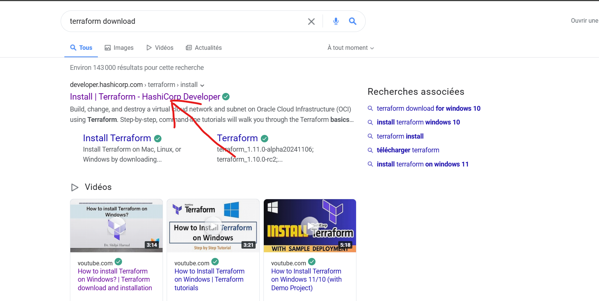
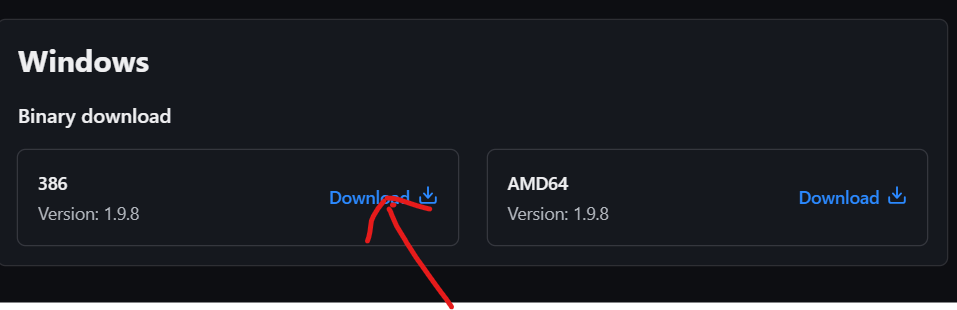
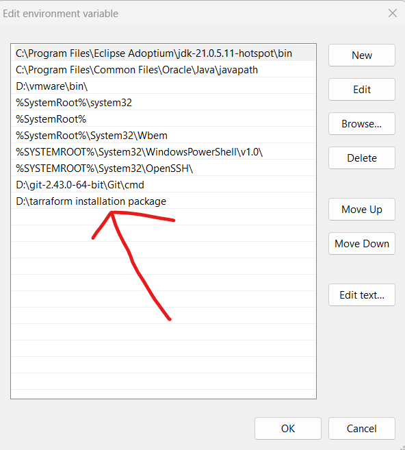
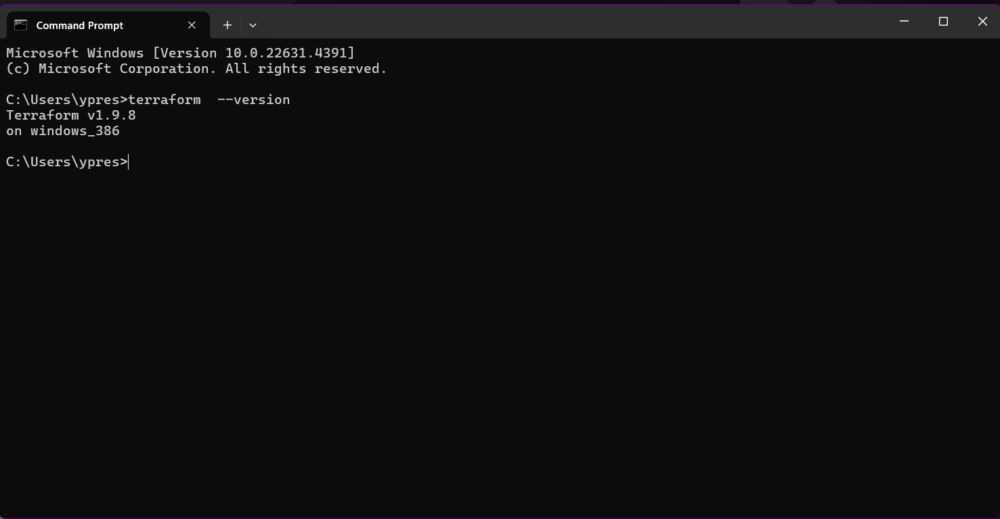

How to download Terraform
Step 1:
Open your web browser and type terraform download, click on the first article that you will
see as shown below.

Step 2:
Navigate and look for terraform window, and click on download, as shown below

After the downloading the package, unzip it.
How to Install Terraform
Step 3:
You need to add the path of your terraform to the system environment variable of your computer, as shown below.

Step 4:
Now you have to verify if the installation was well done, to that you have to open your terminal,
(CMD, powershell.etc...) and type the following command
"terraform --version". As you can see on the picture that follows.

Conclusion
If the version of terraform appear, it means that you have successfully completed the installation of terraform on your pc
Thank you for your attention, and i invite you to follow the link that will follow for more information about the devops tool "Terraform"
.